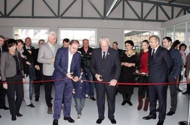
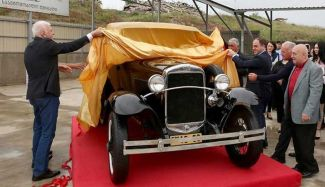
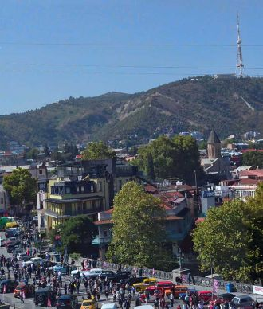
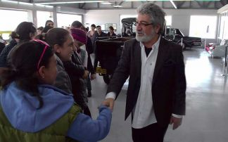
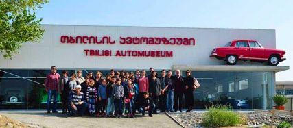

თბილისის ავტომუზეუმი კერძო პირის კოლექციის ბაზაზე შეიქმნა, რომელსაც ის 18 წლის განმავლობაში აგროვებდა. მუზეუმი 2014 წლის 25 ოქტომბერს, თბილისობის დღესასწაულის დროს გაიხსნა. თბილისის საკრებულოს გადაწყვეტილებით, მუზეუმის მიმდებარე უსახელო გზას ავტომუზეუმის ქუჩა ეწოდა.
თავდაპირველად მუზეუმის ექსპოზიცია 25 ავტომანქანისგან შედგებოდა, მას შემდეგ ექსპონატთა რიცხვი თანდათან მატულობს. 2017 წლის 14 მაისს, რესტავრაციის დასრულების შემდეგ, მუზეუმის კოლექციას ორი უიშვიათესი ექსპონატი შეემატა: ГАЗ-М1 (ე. წ. "ემკა") და პიკაპი ГАЗ-4 - დღეს მსოფლიოში სულ ხუთამდე ასეთი ავტომობილია შემორჩენილი.
დღეისთვის თბილისის ავტომუზეუმი დედაქალაქის ერთ-ერთ ღირსშესანიშნაობად არის ქცეული, ყოველწლიურად ის ათასობით დამთვალერებელს მასპინძლობს - როგორც ქვეყნის მკვიდრებს, ასევე უცხოელ სტუმრებს, ის თითქმის ყველა ტურისტულ მარშრუტშია შეტანილი.
  მუზეუმი სისტემატურად მასპინძლობს სკოლის მოსწავლუთა ექსკურსიებს, აქ ტარდება ფოტოსესიები, მუსიკალური და სარეკლამო კლიპების გადაღებები. მუზეუმის ექსპონატებმა არაერთი კინო- და ტელეფილმის გადაღებაში მიიღეს მონაწილეობა.